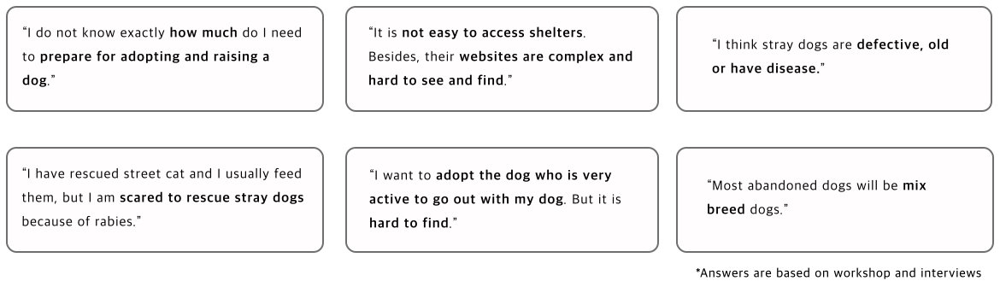
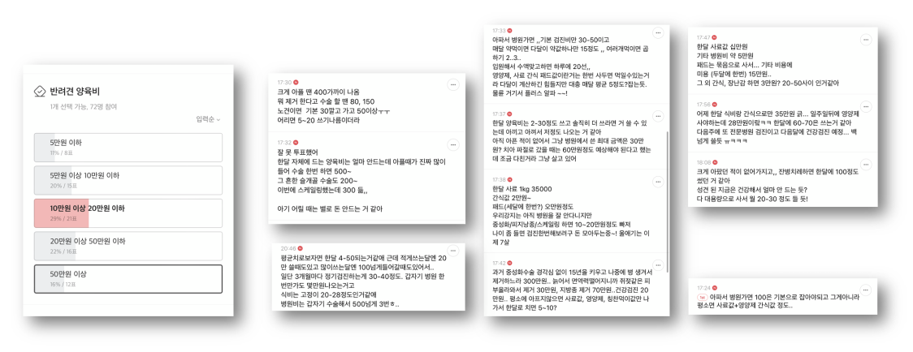
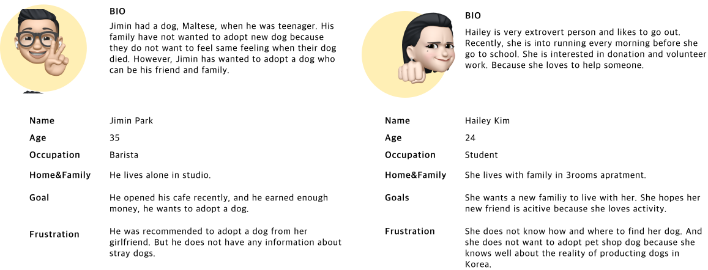
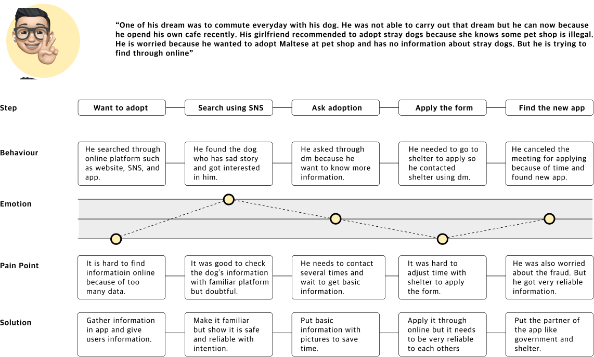
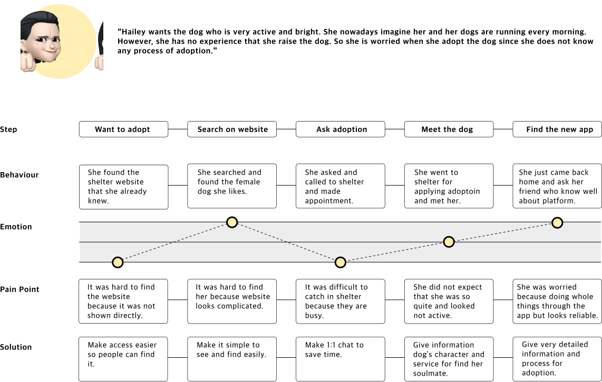
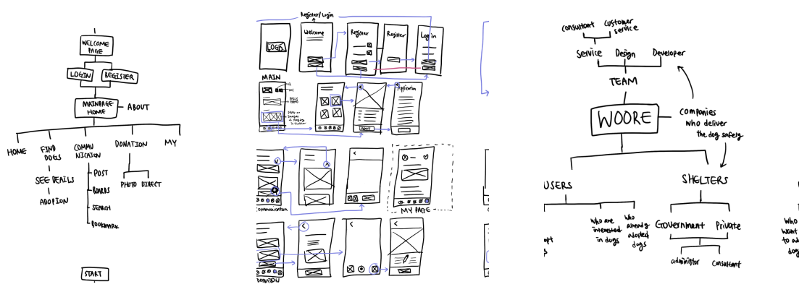

WOORE
How to improve awarness of stray dogs?
School Assignment
Role
User Research
UI Design
Prototyping for usability test
Usability Testing
UI Design
Prototyping for usability test
Usability Testing
Overview
As the number of people who have pets are growing, the number of abandoned pets increase. Accroding to experts in Korea, Korean people prefer to adopt dogs who are pricey, purebred dogs under 60 days old, available in pet shop or from home breeders. Since it is not normal to adopt stray dogs in Korea and people have prejudice against stray dogs, most people are not willing to adopt them. This project aims to improve and increase awareness of prejudice and encourage people to adopt stray dogs rather than buying pet shop dogs.
Define
Brief
This project is a self-directed design project on a topic of I chose. In this project, design was used as a tool for inquiry and research. I was required to create meaningful participatory experiences with neotribe I chose that advance understanding of a topic and engage people in a participatory, co-design process.
Approach
I approached this project from deciding neotribe in South Korea since I was in Korea and it was easier and getable for me to conduct research. I chose Korean who are willing to adopt dogs as my neotribe. After that, I was able to explore deeply in order to choose my topic. My idea and process had developed while I had workshop to my neotribe with toolkit through RTD(research through design).
Research
Research Methods: RTD(Research Through Design), Workshop, Primary/Secondary Research, 1:1 Interviews, Online Survey
I ran the online workshop for 3 times through Miro board. There were 4 activities and interview on workshop, and it ran about 30-45 minutes. 2 activities were about normal dogs participants think and imagine. Other activities were about stray dogs. I got 6 records and documented the full particulars on the Notion. While running workshop, I found that there were many problems about adopting stray dogs. Most participants wanted to adopt and raise dogs but they do not have enough information for adoption. And there was no one who do not have prejudice of stray dogs. Each workshop had improved because of the communication(interveiw) with each participant. It was able to get sincere answer through interview.




‘How can we change people’s negative perception of stray dogs’
‘How can we encourage them to adopt stray dogs?’
‘How can people feel familiar with stray dogs like normal dogs?’
Insight
Koreans usually adopt dogs through acquaintances and pet shops. The adoption rate of abandoned dogs was significantly low, and there were many negative perceptions of stray dogs in workshops as well. People did not know the complicated adoption process. And they have many prejudices that stray dogs may have been abandoned due to disease and old age. However, there are many types of dogs in shelter. In addition, depending on the trend, many purebred dogs are abandoned. People are not aware of the application for adopting stray dogs, and do not like the website because of bad UI/UX.
UX Challenge
App Improves prejudice against abandoned dogs, provide friendly and specific information, and introduce a soulmate system into the app. Therefore, it aims to increase the adoption rate and lower the dissolution of adoption rate. It aims to increase the accessibility of abandoned dog adoption and to give a sense of trust by engaging in adoption, and further improve the image of abandoned dogs as sick and dirty.
Analysis
persona

Journey Map


Design
Core Needs - Solution - Design

Workflow
Wireframe
Stakeholder map
